Bordes (todas las utopías son deprimentes) / Borders (all utopias are depressing)
Ver fotos"Bordes" es un proyecto de investigación/creación basado en los conceptos de "deriva" y "espacios residuales". Crea estrategias y dispositivos de acción directa en el territorio. A partir del proceso de caminar, propone la reapropiación democrática de los espacios públicos, particularmente en los "espacios residuales" a través de las fronteras de Buenos Aires.
¿Cómo pueden los desplazamientos generar nuevas cartografías -opuestas a la visión estandarizada de Googlemaps-? ¿Cómo se puede representar la experiencia del propio territorio? Llevando un carro, hecho por nosotros e intervenido con técnicas textiles, caminamos durante 90 días. Recogimos objetos desechados, chatarra electrónica -que fue refuncionalizada y devuelta al ecosistema urbano, a través de incrustaciones en las paredes agrietadas, permitiendo a sus habitantes simples interacciones con ellos. Se realizaron fotografías, intervenciones textiles, cartografías textiles de los recorridos, objetos electrónicos a partir de desechos, frottages en la propia arquitectura, etc.
"Borders" is a research/creation project based on the concepts of "drift" and "residual spaces". It creates strategies and devices for direct action in the territory. From the process of walking, it proposes the democratic reappropriation of public spaces, particularly in the "residual spaces" across the borders of Buenos Aires city.
How can displacements generate new cartographies -opposed to the standardized vision of Googlemaps? How can the experience of the territory itself be represented?. Carrying a cart, made by us and intervened with textile techniques, we walked for 90 days. We collected discarded objects, electronic scrap -that was refunctionalized and restored to the urban ecosystem, through incrustations in the cracked walls, allowing its inhabitants simple interactions with them. Photographs, textile interventions, textile cartographies of the paths, electronic objects from the waste, frottages in the architecture itself, etc. have been made during our journeys.
 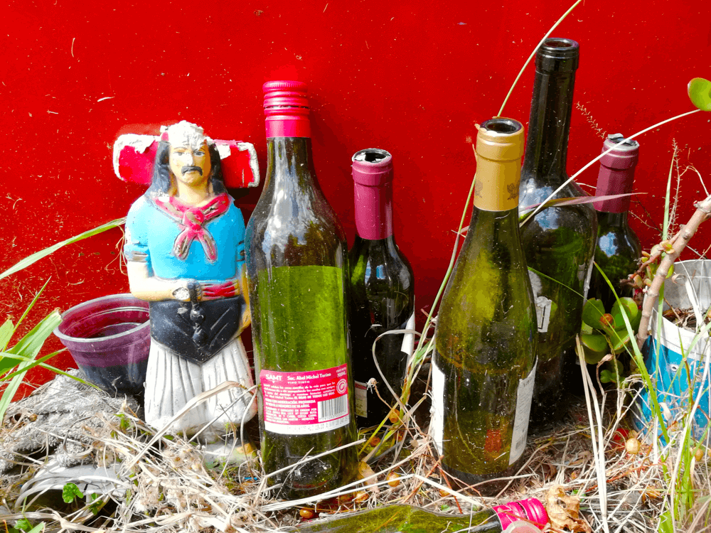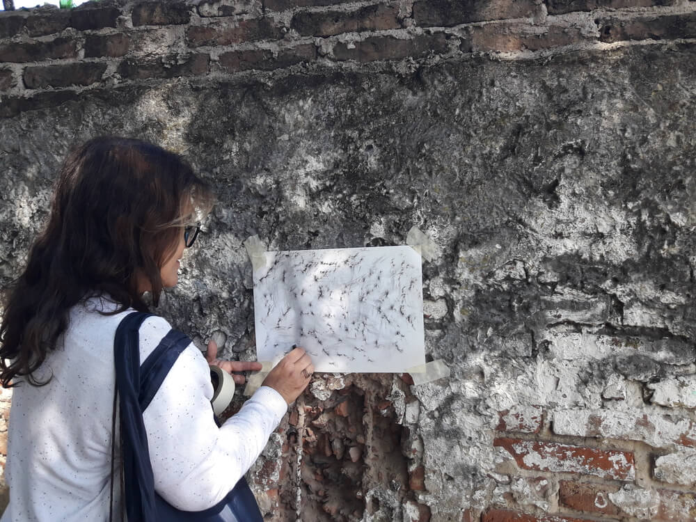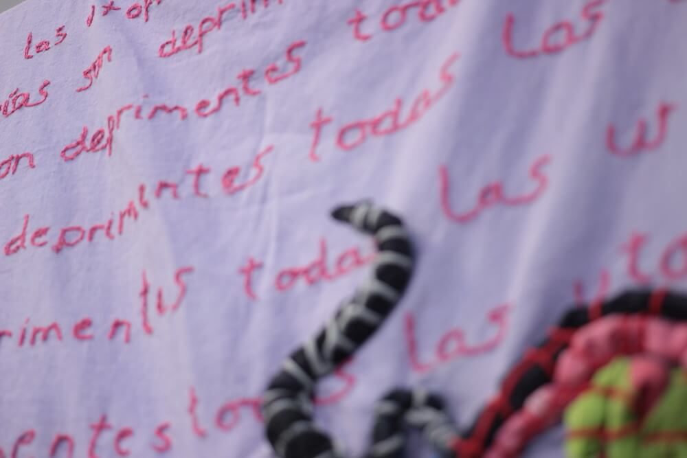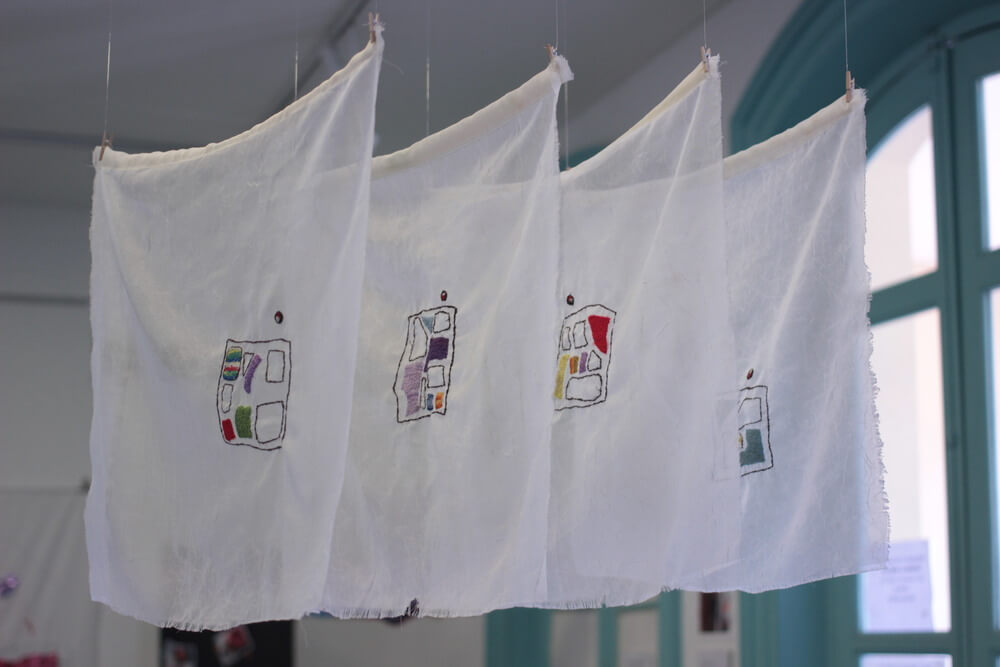
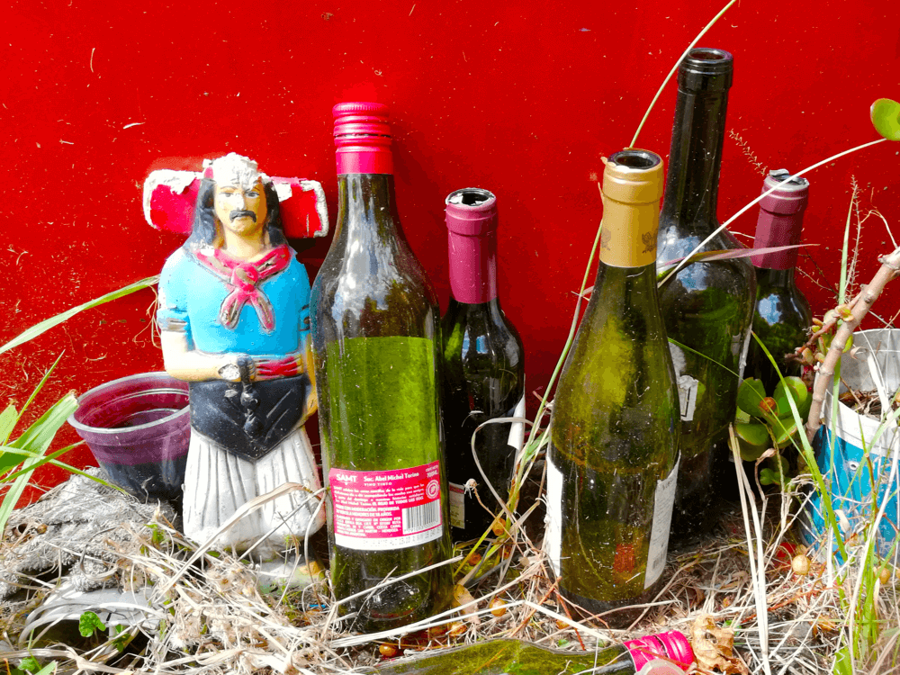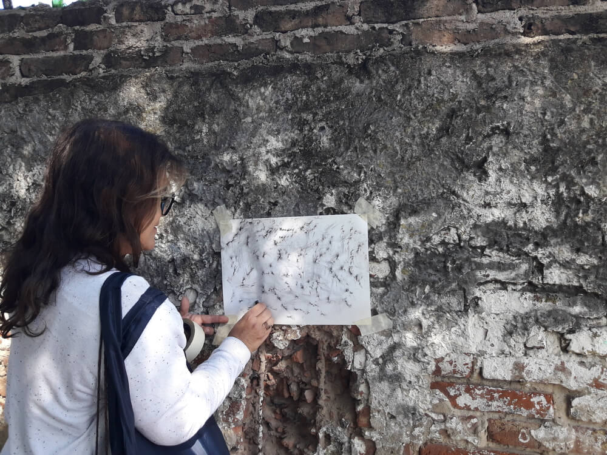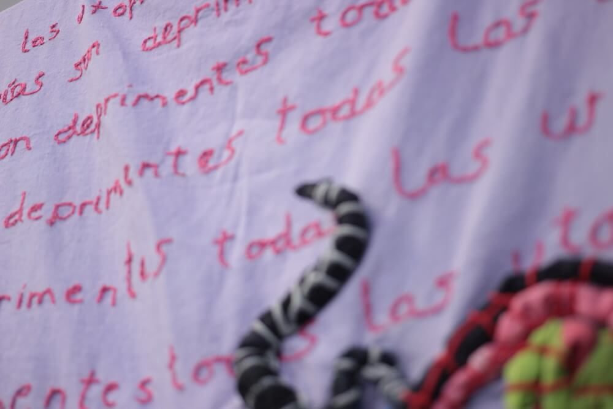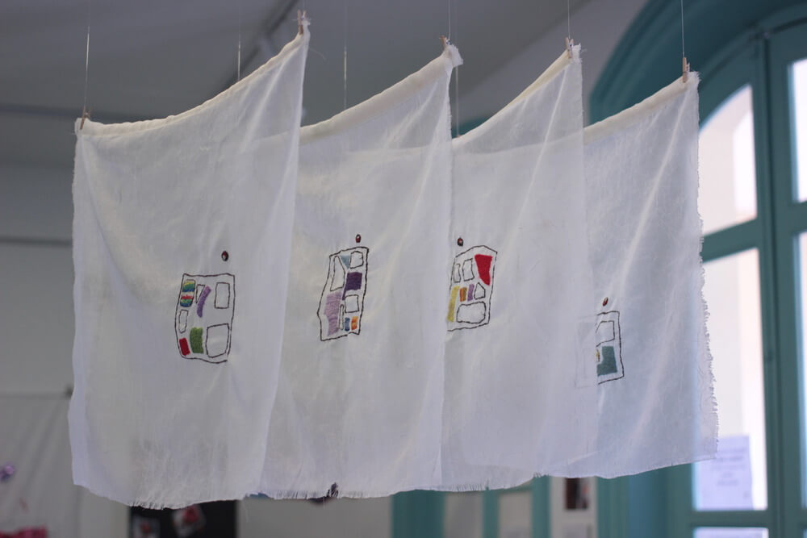
 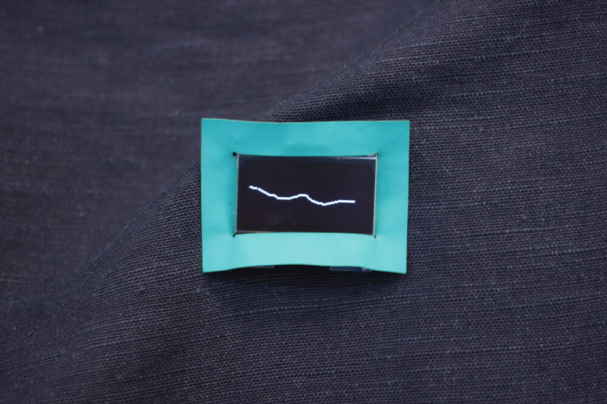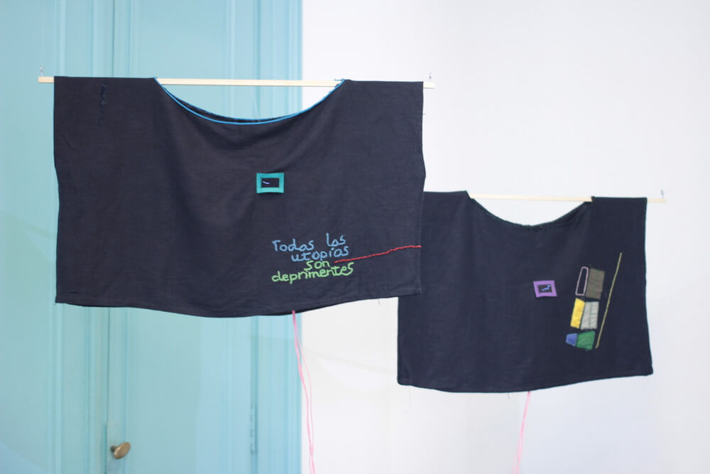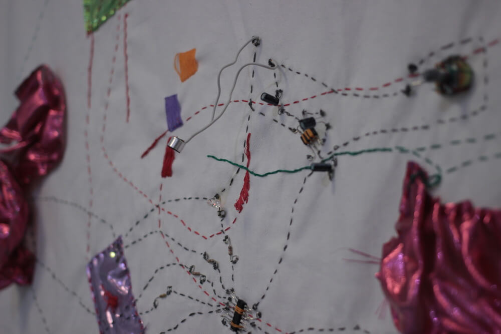
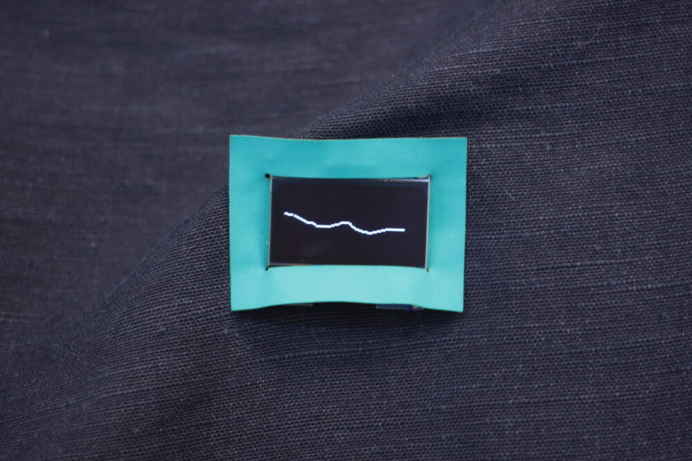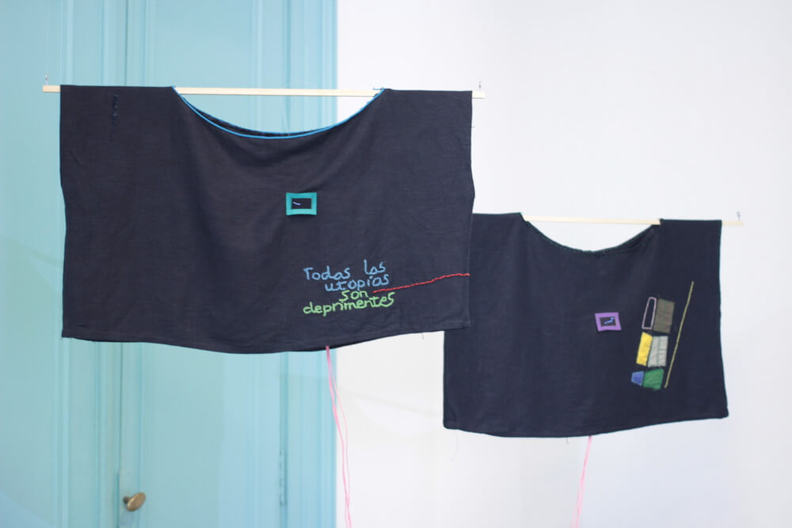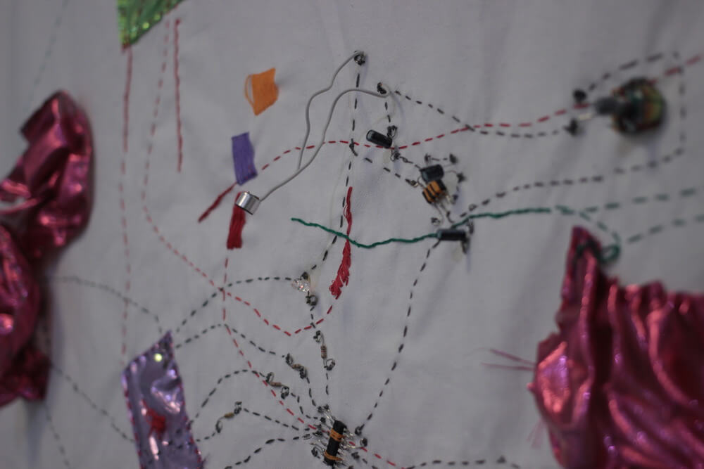